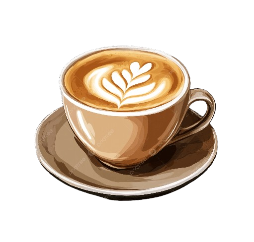
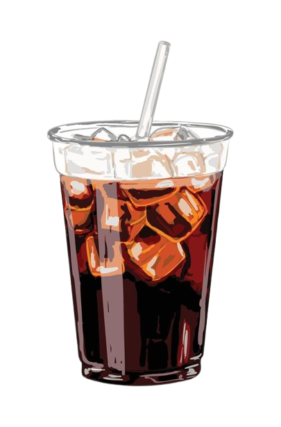
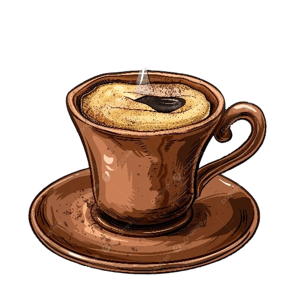
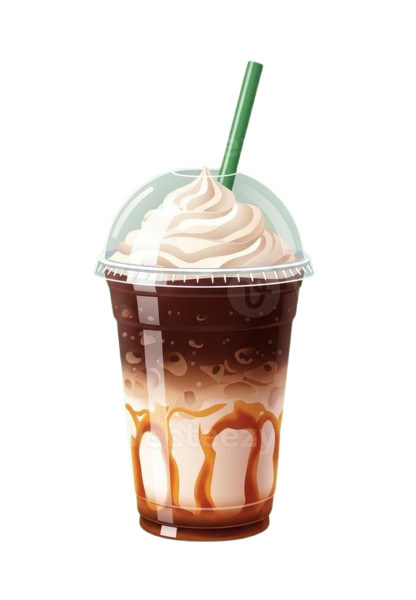
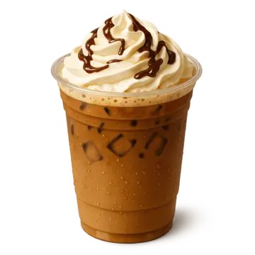

Cappuccino

A cappuccino is a classic Italian coffee drink traditionally crafted from equal parts espresso, steamed milk, and thick milk foam.
Americano

Americanos are made by adding hot water to espresso, resulting in a milder flavor than straight espresso.
Expresso

Espresso is a concentrated coffee beverage made by forcing steam through ground coffee beans.
Frappuccino

Frappuccinos are blended coffee drinks that are typically served cold and contain ice.
Mocha

Mochas are espresso-based drinks that are mixed with steamed milk and chocolate syrup.
Latte

Lattes are espresso-based drinks that are mixed with steamed milk and a small amount of foam.